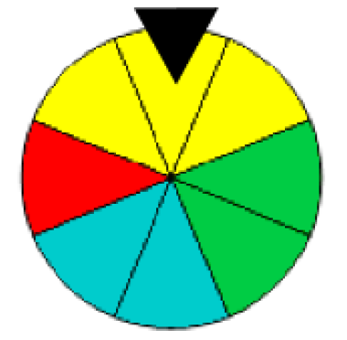

← Retour au choix des chapitres
Chapitre 6 : Statistiques et probabilité
I. Définitions
La fréquence d'une valeur est le quotient de l'effectif de cette valeur par l'effectif total.
La moyenne d'une série statistique est obtenue en divisant la somme des valeurs du caractère par l'effectif total.
La médiane est la valeur partageant une série statistique dont les valeurs sont rangées par ordre croissant (ou décroissant) en deux groupes de même effectif.
L'étendue d'une série statistique est la différence entre la plus grande et la plus petite des valeurs.
Exemple :
Un professeur de SVT demande aux 29 élèves d'une classe de 6
ème de faire germer des graines de blé chez eux.
Le professeur donne un protocole expérimental à suivre :
- mettre en culture sur du coton dans une boîte placée dans une pièce éclairée, de température entre 20 et 25° C.
- arroser une fois par jour
- Il est possible de couvrir les graines avec un film transparent pour éviter l'évaporation de l'eau.
Le tableau ci-dessous donne les tailles des plantules (petites plantes) des 29 élèves à 10 jours après la mise en germination.
| Taille en cm |
0 |
8 |
12 |
14 |
16 |
17 |
18 |
19 |
20 |
21 |
22 |
Total |
| Effectif |
1 |
2 |
2 |
4 |
2 |
2 |
3 |
3 |
4 |
4 |
2 |
29 |
| Fréquence |
129
|
229
|
229
|
429
|
229
|
229
|
329
|
329
|
429
|
429
|
229
|
1 |
1) Calculer la moyenne, la médiane et l'étendue de cette série.
Moyenne :
Moyenne = 0 × 1 + 8 × 2 + 12 × 2 + ⋯ + 20 × 4 + 21 × 4 + 22 × 229 = 48129 ≈ 16,59
Étendue :
Étendue = 22 − 0 = 22
Médiane :
L'effectif total est de 29.
292 = 14,5
La médiane est donc la 15ème valeur, c'est donc 18.
2) Interpréter ces résultats.
- Si toutes les plantules devaient avoir la même taille, elles mesureraient toutes 16,59 cm.
- Il y a autant de plantules mesurant plus de 18 cm que de plantules qui mesurent moins de 18 cm.
- Il y a un écart de 22 cm entre la plus petite et la plus grande plantule.
3) Compléter la ligne des fréquences
Chaque fréquence se calcule en divisant l'effectif correspondant par l'effectif total (29).
II. Utiliser un tableur
Le tableur fonctionne sur le même principe qu'une calculatrice, il possède les opérations de base :
| + pour additionner |
* pour multiplier |
^ pour les puissances |
| − pour soustraire |
/ pour diviser |
|
Exemple 1 :
Pour calculer 4 × 5 + 3 − 98 + 73, on se place dans une cellule vide et dans la barre de formule on écrit =4*5+3-9/8+7^3.
Remarques fondamentales :
- Si on oublie le signe égal, le tableur ne fait pas le calcul, il ne fera qu'afficher l'opération.
- La virgule pour le tableur n'est pas le point de la calculatrice mais bien la virgule !
Exemple 2 :
Supposons que nous voulions additionner les valeurs disponibles dans deux cellules comme B2 et B5, en affichant cette somme dans la cellule C3.
Pour cela, il suffit de se placer dans la cellule C3 et de saisir la formule
"=B2+B5" comme le montre l'image suivante :

Dans le cas où les valeurs à additionner sont nombreuses, par exemple les valeurs de la cellule B2 à la cellule B7, il est plus simple d'utiliser la formule
"=SOMME(B2:B7)" comme l'indique l'image suivante :

Exemple 3 :
Pour calculer une moyenne arithmétique, il existe la fonction
MOYENNE qui permet de calculer la moyenne d'une série de valeurs se trouvant dans une plage de cellules.
Dans l'exemple suivant, il s'agit de calculer la moyenne de la série, la formule est
"=MOYENNE(B2:I2)".

Exemple 4 :
Pour obtenir la valeur minimum ou la valeur maximum d'une série on utilise les fonctions
MIN et
MAX.
Dans l'exemple suivant, il s'agit de calculer la valeur minimale et maximale de la série, les formules sont
"=MIN(B2:I2)" et
"=MAX(B2:I2)".

III. Probabilité
On dit d'une expérience qu'elle est
aléatoire lorsqu'elle vérifie trois conditions :
- On connaît tous les résultats possibles de l'expérience ;
- Le résultat n'est pas prévisible ;
- On peut reproduire plusieurs fois l'expérience dans les mêmes conditions.
Exemple : On lance un dé et on regarde la face visible lorsque le dé s'arrête de rouler.
Définition : Chacun des résultats possibles d'une expérience est une issue de l'expérience.
Dans l'exemple précédent, l'expérience a 6 issues : 1 ; 2 ; 3 ; 4 ; 5 ; 6.
Définition : La
probabilité d'un événement est un nombre qui traduit la « chance » qu'un événement se réalise. Ce nombre est compris entre 0 et 1 et peut s'écrire :
- Avec une fraction, par exemple : 18
- Avec un pourcentage, par exemple : 12,5%
- Avec un nombre décimal, par exemple : 0,125
Exemple : Si on lance un dé à six faces, on a 1 chance sur 6 d'obtenir "3". Si on note F l'événement "obtenir un 3", on dit que la probabilité de l'événement F est 16, on la note p(F) = 16.
Définitions :
- Un événement dont la probabilité est égale à 0 est un évènement impossible.
- Un événement dont la probabilité est égale à 1 est un évènement certain.
Propriété : Quand les issues d'une expérience aléatoire ont toutes la même probabilité (situation équiprobable) alors la probabilité d'un événement est :
nombre de résultats favorables à l'événement
nombre de résultats possibles
Exemple :

On fait tourner une roue marquée sur ses secteurs de couleurs différentes et on regarde le secteur marqué par la flèche.
Calculer la probabilité de l'évènement A : "Obtenir jaune"
Si on tourne cette roue, chaque secteur à la même probabilité de sortir.
Il y a 3 secteurs jaunes sur 8 secteurs, donc
p(A) = 38.
IV. Lien entre probabilité et fréquence
Propriété : Si on répète un très grand nombre de fois la même expérience aléatoire, la fréquence d'un évènement est proche de la probabilité de cet évènement.
Exemple : En reprenant l'exemple de la roue :
Pour 30 répétitions : 
Fréquence d'apparition de la couleur jaune :
1130 ≈ 0,3667 (3/8 = 0,375)
Pour 122 800 répétitions : 
Fréquence d'apparition de la couleur jaune :
45766122800 ≈ 0,3727 (3/8 = 0,375)
Pour 393 511 répétitions : 
Fréquence d'apparition de la couleur jaune :
147259393511 ≈ 0,37422 (3/8 = 0,375)
On observe que plus le nombre de répétitions est grand, plus la fréquence se rapproche de la probabilité théorique.